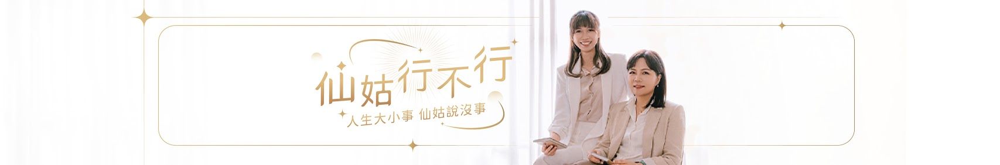

仙姑 · Medium
Alice科技仙姑
任職於全球知名科技公司，下班後的斜槓身分是一位通靈仙姑。 以天賦替人解讀源頭起因，在節目中分享實際的諮詢案例。

科技業的通靈少女版。
白天寫程式，下班後問神明。
科技業的通靈少女版。在全球知名科技公司任職的 Alice， 下班後的斜槓人生卻是一位通靈仙姑，這項天賦讓 Alice 幫助很多人。
「所有事情的發生都非偶然」，了解源頭起因，自然對當下世界的種種就能釋懷。 人生的賽道很長，一個念頭的改變就有無限生機。
透過麻瓜女 SuSu 訪談科技仙姑 Alice 的諮詢案例， 想跟大家談談這世的關卡可以怎麼解？ 2 位科技業上班的女生以輕鬆對談，讓你了解通靈世界的奇幻大小事。
所有事情的發生都非偶然。 —— 歡迎你來到「仙姑行不行」的異想世界！
任職於全球知名科技公司，下班後的斜槓身分是一位通靈仙姑。 以天賦替人解讀源頭起因，在節目中分享實際的諮詢案例。
同樣在科技業上班的麻瓜女，站在完全不懂靈界的視角發問， 把讀者心裡的「這到底行不行？」一句句問出來。